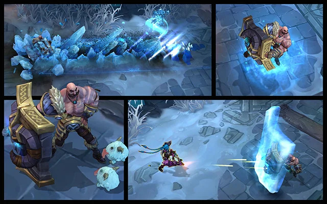
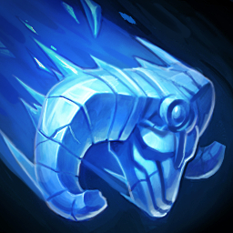
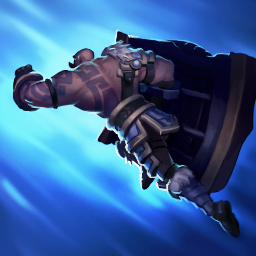
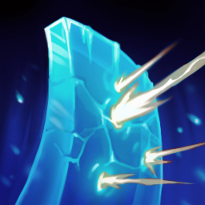
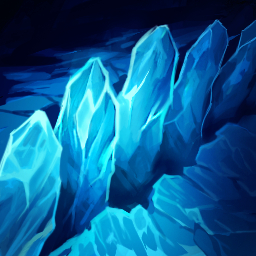

Braum
Blessed with massive biceps and an even bigger heart, Braum is a beloved hero of the Freljord. Every mead hall north of Frostheld toasts his legendary strength, said to have felled a forest of oaks in a single night, and punched an entire mountain into rubble.


Braum propels freezing ice from his shield, slowing and dealing magic damage. Applies a stack of Concussive Blows.

Braum leaps to a target allied champion or minion. On arrival, Braum and the ally gain Armor and Magic Resist for a few seconds.

Braum raises his shield in a direction for several seconds, intercepting all projectiles causing them to hit him and be destroyed.

Braum slams the ground, knocking up enemies nearby and in a line in front of him. A fissure is left along the line that slows enemies.
"Today, we fight as enemies. Tomorrow, we may fight as brothers."
Access the Official Character Wiki for Braum to delve deeper into his origins, discover untold stories, and explore the rich tapestry of the Runeterra Universe. Learn about his unbreakable bond with Ornn, his encounters with Ashe and Tryndamere, and the heroic deeds that have inspired generations.